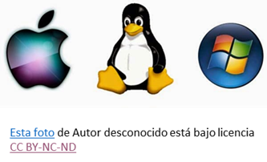

¿Qué es un sistema Operativo?
¿Qué es un sistema operativo?
Se denomina sistema operativo, o su abreviación S.O. , a una serie de programas que componen un sistema informático, y que están organizados de un modo específico a fin de obrar como puente entre los elementos del hardware, las aplicaciones o programas y el usuario. El S.O. es la herramienta que se ocupa de gestionar los recursos de hardware y proveer a los programas o aplicaciones que necesiten ser utilizados de los servicios que requieran para su correcto funcionamiento.
Los sistemas operativos utilizan interfaces gráficas diseñadas para simplificar la interacción del usuario con la computadora, presentando ventanas, escritorios, íconos y enlaces que ocultan la complejidad del hardware y los múltiples procesos simultáneos. Al usar una computadora, interactúan cuatro elementos principales: el hardware (componentes físicos), el software (sistema operativo e interfaz gráfica), los programas específicos (como procesadores de texto o reproductores de video) y el usuario. El sistema operativo coordina y gestiona los servicios y programas elegidos, siendo ejemplos comunes Microsoft Windows, Mac OS X y Linux.
